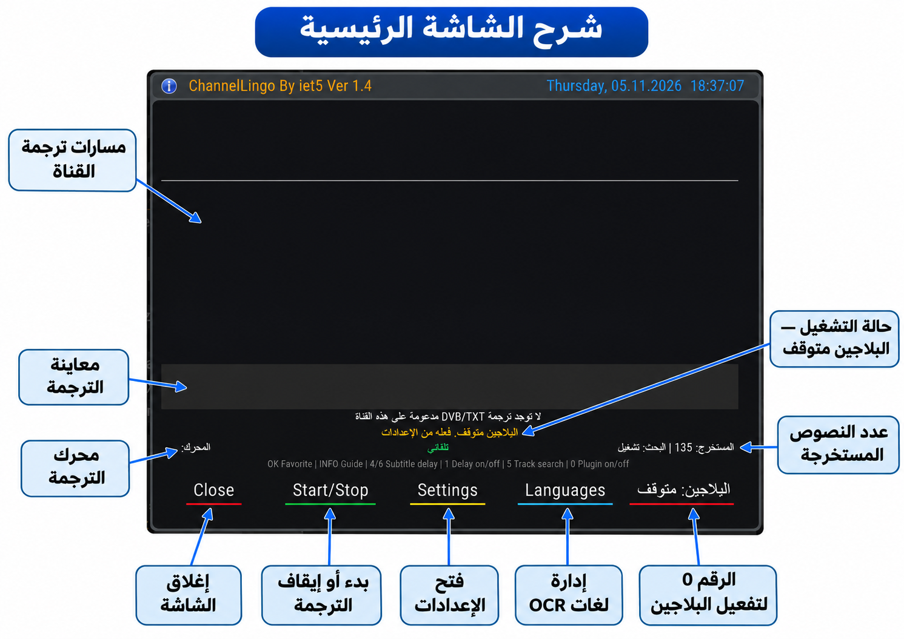
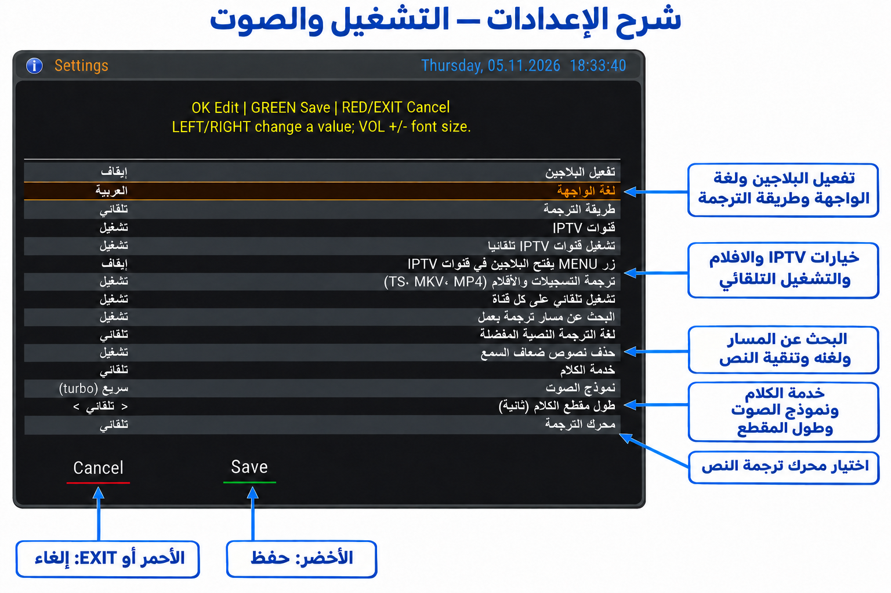
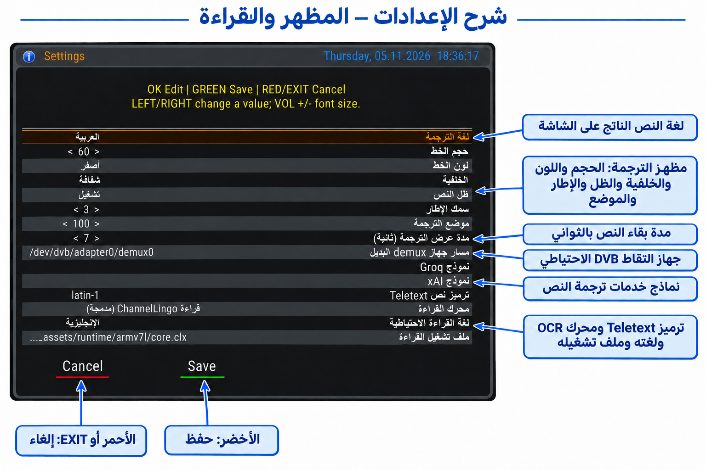
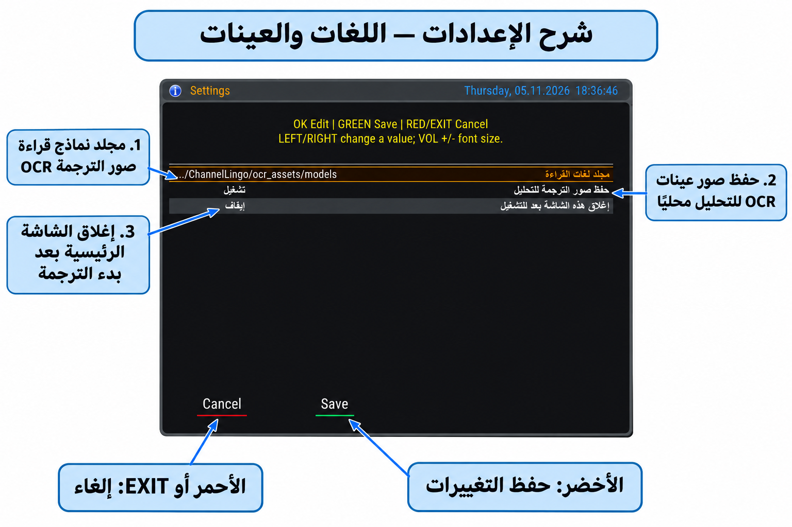

إعداد وتطوير البلاجين: iet5
الإصدار 1.4 • صور ٥ نوفمبر ٢٠٢٦
دليل عملي لترجمة القنوات الحية وIPTV والتسجيلات والأفلام على Enigma2، مع شرح جميع إعدادات الإصدار الحالي وأزرار الريموت وخدمات الصوت والقراءة.
اعتمد هذا الدليل على ملفات الإصدار الحالي وصور المستخدم الحديثة. الصور تعرض إعدادات المستخدم وقت التقاطها، وليست بالضرورة القيم الافتراضية. لم تُعدّل ملفات البلاجين لإعداد الدليل.
تتضمن صور PNG في هذه النسخة تسميات توضيحية وأسهمًا داخل الصورة نفسها، مع الاحتفاظ بملفات الصور الأصلية منفصلة دون استبدالها. أرقام الشرح في الجداول تتبع ترتيب السطور من أعلى الصورة لأسفلها. لا توجد ضمن الصور المرسلة لقطة لمدير اللغات أو لترجمة تعمل؛ يشرح الدليل هذه الوظائف بالنص دون اختلاق صور لها.
كيفية استخدام الدليل
ابدأ بالتشغيل السريع، ثم راجع صورة الشاشة والجدول الذي يليها. عناوين Word تتيح التنقل من جزء التنقل. توجد في النهاية خطوات المفاتيح وحلول المشكلات ومراجع الخدمات.
١. فكرة البلاجين والمتطلبات
يستخرج ChannelLingo نص ترجمة القناة أو يتعرف على الكلام من الصوت، ثم يترجم النص ويعرضه فوق صورة التلفزيون. يختلف عن الدبلجة: لا يستبدل صوت القناة. في وضع محرك الترجمة «إيقاف» يمكن عرض النص الأصلي المستخرج.
الطريقة الأولى: DVB صور ترجمة تُقرأ بمحرك OCR محلي، أو Teletext نصّي يُفك مباشرة. هذه الطريقة خاصة بالقنوات الحية الفضائية/الأرضية/الكابل المدعومة. وجود مسار في القائمة لا يضمن إرساله ترجمة طوال الوقت.
الطريقة الثانية: التقاط مقاطع صوت، إرسالها لخدمة التعرف على الكلام، ثم ترجمة النص. تستخدم للقنوات الحية التي لا توفر ترجمة مناسبة ولـ IPTV والملفات المحلية المتوافقة.
تحتاج رسيفر Enigma2 وحزمة مناسبة لمعمارية المعالج ونسخة Python وصورة الجهاز. توجد مسارات توافق DreamOS/Python 2.7 وOpenATV/Python 3.14 في المصدر؛ لا يعني ذلك ضمان تشغيل كل جهاز أو كل صورة. تختلف تفاصيل الرسم والمفاتيح حسب الصورة والريموت.
الإنترنت مطلوب لخدمات ترجمة النص والتعرف على الكلام وتنزيل نماذج OCR. قراءة صور الترجمة نفسها محلية بعد توافر المحرك والنموذج. خدمة صوت صالحة تحتاج مفتاح API؛ Google وMyMemory لا يطلبان ملف مفتاح في إعداد البلاجين الحالي.
التثبيت والتحديث
استخدم حزمة الإصدار 1.4 المناسبة لجهازك، واتبع تعليمات الحزمة. مسار الإضافة على الرسيفر: /usr/lib/enigma2/python/Plugins/Extensions/ChannelLingo. قبل التحديث احتفظ بنسخة من إعداداتك ومفاتيحك ونماذجك الإضافية، ثم أعد تشغيل واجهة Enigma2 حسب تعليمات الحزمة. لا تعتمد على اسم الرسيفر وحده لاختيار معمارية الحزمة. لا يتضمن هذا الدليل أمر تثبيت لحزمة لم تُقدّم معه.
٢. التشغيل السريع لأول مرة
1. شغّل قناة أو ملفًا مدعومًا، وافتح ChannelLingo من قائمة الإضافات أو من مدخله بالقائمة الرئيسية. قد يظهر أيضًا في قائمة Extensions بحسب صورة الجهاز.
2. اضغط الأصفر لفتح الإعدادات. اجعل «تفعيل البلاجين» تشغيل. اختر لغة الواجهة، ثم «لغة الترجمة» المطلوبة؛ مثل العربية.
3. ابدأ بطريقة «تلقائي» ومحرك ترجمة «تلقائي»، وشغّل البحث عن مسار يعمل. لترجمة الصوت جهّز ملف مفتاح خدمة واحدة على الأقل كما في فصل المفاتيح.
4. اضغط الأخضر داخل الإعدادات للحفظ. في الشاشة الرئيسية اضغط الأخضر للبدء. إذا كان البلاجين معطّلًا، فعّله بالرقم 0 أولًا.
5. مع مسارات القناة: حدد مسارًا مناسبًا بالأسهم. العلامة الخضراء اقتراح لمسار جاهز؛ انتظر وصول جملة فعلية. يمكن استخدام OK لحفظ/إزالة المسار المفضل.
6. أغلق الرئيسية بالأحمر أو EXIT لمواصلة المشاهدة؛ تستمر الترجمة في الخلفية. لإيقافها اضغط الأخضر من الرئيسية أو اضغط EXIT/BACK مطولًا إذا كانت صورة جهازك تدعم الربط العام.
مثالان عمليان
قناة فرنسية بها DVB: لغة الهدف العربية، لغة المسار الفرنسية إن رغبت، ومحرك OCR المدمج مع نموذج الفرنسية. لغة OCR الاحتياطية تتبع النص الأصلي، ولا تجعلها العربية لمجرد أن الهدف عربي.
قناة بلا ترجمة أو IPTV: اختر «تلقائي» أو «الكلام»، فعّل دعم IPTV عند استخدامه، وضع مفتاح خدمة الصوت. يمكن لخدمة Cloudflare التعرف على الصوت بينما يترجم Google النص؛ لا يلزم أن تكون خدمة الصوت ومحرك الترجمة من الشركة نفسها.
٣. شرح الشاشة الرئيسية

الشكل ١ — الشاشة الرئيسية العربية: 10_Annotated.png
اللقطة تعرض البلاجين متوقفًا وقائمة مسارات فارغة. لا تعني هذه الصورة أن ترجمة الصوت غير ممكنة؛ يلزم تفعيل البلاجين واختيار طريقة مناسبة ومفتاح صوت عند الحاجة. الرقم 135 عدّاد ظاهر في اللقطة، وليس دليلًا على تشغيل الترجمة في تلك اللحظة.
قراءة عناصر الشاشة الرئيسية
| رقم | الجزء | الشرح |
|---|---|---|
| 1 | أعلى الشاشة | مسارات الترجمة الأصلية إن وفرها الرسيفر. PID يعرّف مجرى البيانات؛ DVB صور وTXT نص Teletext. Ready تعني جاهزية القراءة، لا وصول جمل فعلية. > يميز المسار النشط لدى الرسيفر و* المسار المحفوظ. |
| 2 | الشريط الرمادي | معاينة النص الحالي داخل الرئيسية. النص النهائي يظهر فوق صورة المشاهدة عند إغلاق القائمة. على بعض صور OpenATV يعلّق البلاجين طبقة الترجمة أثناء القوائم حتى لا تغطيها. |
| 3 | سطر المسار/المصدر | يعرض PID ولغة ونوع المسار، أو يوضح أن المصدر صوت DVB أو IPTV أو تسجيل/فيلم. «لا توجد ترجمة DVB/TXT مدعومة» يصف المسارات النصية ولا يشخص الإنترنت. |
| 4 | سطر الحالة | رسالة تشغيل أو استماع أو بحث أو إيقاف أو خطأ. في الصورة سبب عدم البدء واضح: البلاجين معطل. ابحث عن هذه الرسالة قبل تغيير الإعدادات المتقدمة. |
| 5 | المحرك والعداد | المحرك المستخدم أو الاختيار التلقائي؛ في وضع الصوت قد يظهر اسم الخدمة مع المحرك. Extracted يعدّ النصوص المستخرجة. Search يوضح تفعيل البحث، وDelay التأخير الإضافي إذا ضُبط. |
| 6 | شريط الاختصارات | تذكير بأزرار OK وINFO و4/6 و1 و5 و0. هذه الوظائف داخل الرئيسية، ولا تنطبق جميعها على القوائم الأخرى. |
| 7 | الأزرار السفلية | إغلاق، بدء/إيقاف، الإعدادات، اللغات. مؤشر «البلاجين» يتغير لونه وحالته ويُبدّل بالرقم 0؛ ليس زرًا ملونًا خامسًا في الريموت. |
٤. أزرار الريموت والحفظ لكل قناة
| الزر | الوظيفة |
|---|---|
| أحمر / EXIT | إغلاق الرئيسية مع استمرار الترجمة إن كانت تعمل. |
| أخضر | بدء/إيقاف الترجمة داخل الرئيسية. داخل الإعدادات: حفظ. داخل اللغات: تنزيل. |
| أصفر / MENU | فتح الإعدادات من الرئيسية، مع مراعاة اختصار MENU الخاص بـ IPTV الموضح لاحقًا. |
| أزرق | إدارة لغات OCR؛ ليس قائمة تغيير لغة الهدف. |
| OK | حفظ أو إزالة المسار المفضل للقناة المحدد بالقائمة. داخل الإعدادات: تحرير/اختيار قيمة. |
| INFO | فتح دليل البلاجين المدمج. |
| 4 / 6 | خفض/زيادة التأخير الإضافي بمقدار 0.5 ثانية، ضمن 0–30 ثانية. |
| 1 | تفعيل/تعطيل التأخير دون فقد قيمته المحفوظة. |
| 5 | تشغيل/إيقاف البحث عن مسار ترجمة يعمل. |
| 0 | تفعيل/تعطيل البلاجين بالكامل. |
| EXIT / BACK مطولًا | إيقاف العمل بالخلفية وحفظ إيقاف الترجمة لهذه القناة، إذا نجح ربط المفتاح في صورة الجهاز. |
| VOL + / − | في الإعدادات فقط: زيادة/خفض حجم خط الترجمة بدل الصوت. |
يحفظ البلاجين المسار الناجح واختيارات القناة مثل التأخير وحالة إيقافها. لذلك قد تبقى قناة متوقفة رغم تفعيل البدء التلقائي؛ افتحها واضغط الأخضر لإعادة تشغيلها. إغلاق الرئيسية بالأحمر يختلف عن الإيقاف بالأخضر وعن تعطيل البلاجين بالرقم 0.
إذا تأخر النص أصلًا، فلا تضف تأخيرًا لمحاولة تقديمه. اخفض قيمة التأخير إلى صفر أو عطّلها بالرقم 1. المعالجة السحابية وجمع الصوت لهما زمن لا يمكن إلغاؤه بقيمة تأخير سالبة؛ البلاجين لا يقبل تأخيرًا إضافيًا سالبًا.
٥.1 الإعدادات — الصفحة 1

الشكل 2 — صفحة الإعدادات 1: 11_Annotated.png
استخدم أعلى/أسفل لتحديد سطر، ويسار/يمين لتغيير القيمة المتاحة، أو OK لفتح الاختيارات/تحرير النص. القيم الرقمية تتدرج، وOK يزيدها ويلتف عند الحد. الأخضر يحفظ، والأحمر أو EXIT يلغي. شرح السطور التالية بنفس ترتيب الصورة.
شرح إعدادات الصفحة 1 — السطور 1 إلى 8
| السطر | الإعداد | وظيفته وكيفية استخدامه |
|---|---|---|
| 1 | تفعيل البلاجين | مفتاح التشغيل العام. يجب أن يكون «تشغيل» قبل البدء بالأخضر. الرقم 0 يغيّر الحالة من الشاشة الرئيسية. الإيقاف يمنع الترجمة التلقائية أيضًا. |
| 2 | لغة الواجهة | لغة قوائم البلاجين: لغة الرسيفر، العربية، أو الإنجليزية. يظهر التغيير فور الاختيار للمعاينة؛ الأخضر يحفظه والأحمر/EXIT يعيد اللغة السابقة. لا يحدد هذا الخيار لغة الترجمة. |
| 3 | طريقة الترجمة | تلقائي: يبدأ بترجمة القناة المتاحة وينتقل للصوت عند تعذر استخدامها. ترجمة القناة: DVB/TXT للقنوات الحية فقط. الكلام: التعرف على الصوت ثم ترجمة النص، ويحتاج مفتاح خدمة صوت. |
| 4 | قنوات IPTV | يسمح بترجمة صوت قنوات IPTV المتوافقة. اختر تلقائي أو الكلام في طريقة الترجمة. إيقافه يمنع تشغيل ترجمة IPTV حتى عند البدء يدويًا. |
| 5 | تشغيل قنوات IPTV تلقائيًا | يسمح بالبدء التلقائي على IPTV مع تفعيل دعمها. التشغيل التلقائي العام وسجل القناة يؤثران أيضًا؛ القناة التي سبق إيقاف ترجمتها تبقى متوقفة حتى تبدأها. قد يُعاد تشغيل قناة محفوظة للصوت ولو كان هذا الخيار معطلًا. |
| 6 | زر MENU يفتح البلاجين في قنوات IPTV | اختصار اختياري أثناء مشاهدة IPTV والشاشة خالية من القوائم. MENU يفتح الشاشة ويغلقها عند الضغط مرة أخرى. داخل الإعدادات والقوائم الأخرى لا تتوقع أن يعمل كاختصار مشاهدة. |
| 7 | ترجمة التسجيلات والأفلام (TS، MKV، MP4) | يسمح بترجمة صوت ملف محلي مشغّل من الأنواع المذكورة. لا ينشئ ملف ترجمة ولا يحفظ نسخة مترجمة من الفيلم. يلزم صوت قابل للقراءة وخدمة صوت صالحة. |
| 8 | تشغيل تلقائي على كل قناة | لبدء الترجمة عند تغيير القناة، مع تفعيل البلاجين. تعطيله يمنع البدء العام للقنوات الجديدة، لكنه لا يمحو اختيارات القنوات المحفوظة. الإيقاف المتعمد لقناة محفوظ حتى تبدأها مجددًا. |
شرح إعدادات الصفحة 1 — السطور 9 إلى 15
| السطر | الإعداد | وظيفته وكيفية استخدامه |
|---|---|---|
| 9 | البحث عن مسار ترجمة يعمل | يجرب المسارات المتاحة عند عدم وصول نص، ويثبت على المسار الذي يرسل ترجمة فعلية. الرقم 5 يبدّل هذا الخيار من الشاشة الرئيسية. تعطيله يبقي المسار المختار وقد يمنع استكمال البحث التلقائي. |
| 10 | لغة الترجمة النصية المفضلة | لغة مسار القناة الأصلي المفضل، وليست لغة النص الناتج. «تلقائي» يفضّل مسارًا بلغة مختلفة عن الهدف إن توفر. المسار المحفوظ للقناة له أولوية. |
| 11 | حذف نصوص ضعف السمع | ينقّي أوصافًا مثل [موسيقى] و[ضحك] من النص. أوقفه إذا كنت تحتاج هذه المعلومات. التنقية تعتمد على شكل النص وقد لا تزيل كل الأوصاف. |
| 12 | خدمة الكلام | تلقائي أو GroqCloud أو xAI Grok أو Cloudflare Workers AI. التلقائي يجرب الخدمات المتاحة بمفاتيحها بالترتيب Groq ثم xAI ثم Cloudflare. هذا الاختيار مستقل عن محرك ترجمة النص. |
| 13 | نموذج الصوت | سريع (turbo) أو دقيق (large-v3). يحدد نموذج Groq المستخدم للتعرف على الكلام؛ الخدمات الأخرى تستخدم نموذجها أو واجهتها المحددة في البلاجين، فلا تفترض أن هذا الخيار يغير نموذج كل خدمة. |
| 14 | طول مقطع الكلام (ثانية) | اتركه «تلقائي» للبدء: يختار البلاجين طولًا بحسب عدد المفاتيح ويكيّفه عند القيود. المقطع الأقصر يقلل انتظار الجمع ويزيد الطلبات. الحد العملي اليدوي 2–10 ثوانٍ؛ اختيار 1 يعامل تلقائيًا في عامل الصوت الحالي. |
| 15 | محرك الترجمة | تلقائي أو Google أو MyMemory أو Groq أو xAI أو إيقاف. «إيقاف» يعرض النص الأصلي المستخرج. التلقائي يحاول Groq ثم xAI عند توفر المفاتيح، ثم Google، ثم MyMemory إذا كانت لغة المصدر معروفة. |
٥.2 الإعدادات — الصفحة 2

الشكل 3 — صفحة الإعدادات 2: 12_Annotated.png
استخدم أعلى/أسفل لتحديد سطر، ويسار/يمين لتغيير القيمة المتاحة، أو OK لفتح الاختيارات/تحرير النص. القيم الرقمية تتدرج، وOK يزيدها ويلتف عند الحد. الأخضر يحفظ، والأحمر أو EXIT يلغي. شرح السطور التالية بنفس ترتيب الصورة.
شرح إعدادات الصفحة 2 — السطور 1 إلى 8
| السطر | الإعداد | وظيفته وكيفية استخدامه |
|---|---|---|
| 1 | لغة الترجمة | لغة النص الذي تريد قراءته على الشاشة، مثل العربية. تختلف عن لغة الواجهة ولغة مسار القناة ولغة OCR الاحتياطية. |
| 2 | حجم الخط | من 20 إلى 100 بخطوة 4. القيمة في الصورة 60، وليست القيمة الافتراضية 40. داخل الإعدادات يغيّر VOL +/− الحجم مهما كان السطر المحدد. المظهر يتناسب مع دقة الشاشة. |
| 3 | لون الخط | أبيض، أصفر، أخضر، سماوي، برتقالي، أحمر، أرجواني، بني، أزرق، أو أسود. الصورة تعرض الأصفر، والافتراضي أبيض. اختر لونًا واضحًا مع الخلفية. |
| 4 | الخلفية | شفافة، شبه شفافة، أو سوداء. الشفافة لا ترسم صندوقًا خلف النص؛ السوداء تساعد القراءة فوق المشاهد الفاتحة. |
| 5 | ظل النص | إظهار ظل حول النص لتحسين القراءة. تطبيق الظل يعتمد على واجهات الرسم المتاحة في صورة الرسيفر. |
| 6 | سمك الإطار | من 0 إلى 10 بخطوة 1؛ الافتراضي 3 كما في الصورة. الصفر يلغي الحد. يطبق حسب دعم الرسيفر. |
| 7 | موضع الترجمة | من 0 إلى 500 بخطوة 10. زيادة القيمة ترفع الترجمة بعيدًا عن أسفل الشاشة. الصورة 100 والافتراضي 90؛ ليست هذه القيمة تأخيرًا زمنيًا. |
| 8 | مدة عرض الترجمة (ثانية) | من 1 إلى 30؛ الافتراضي 7. تحدد مدة العرض القصوى المستخدمة، وقد يرسل المصدر سطرًا أقصر أو يستبدله نص جديد. لا تغيّر زمن وصول الترجمة ولا مدة مقطع الصوت. |
شرح إعدادات الصفحة 2 — السطور 9 إلى 15
| السطر | الإعداد | وظيفته وكيفية استخدامه |
|---|---|---|
| 9 | مسار جهاز demux البديل | يستخدم لالتقاط بث DVB إذا لم يتمكن البلاجين من معرفة الجهاز النشط آليًا. الافتراضي /dev/dvb/adapter0/demux0. اتركه دون تعديل ما لم تعرف مسار جهازك الصحيح. |
| 10 | نموذج Groq | اسم نموذج ترجمة النص لدى Groq، وليس نموذج الصوت. اتركه فارغًا للاختيار التلقائي من النماذج المتاحة للحساب. الاسم غير الصحيح أو غير المتاح يسبب رفض الطلب. |
| 11 | نموذج xAI | اسم نموذج ترجمة النص لدى xAI. يمكن تركه فارغًا للاختيار التلقائي. تغييره لا يحدد نموذج التعرف على الكلام في واجهة xAI الصوتية. |
| 12 | ترميز نص Teletext | ترميز احتياطي لفك نص Teletext، وافتراضيه latin-1. يؤثر على الحروف المقروءة من هذا المصدر، وليس على لغة الترجمة المطلوبة. لا تغيّره عشوائيًا. |
| 13 | محرك القراءة | قراءة ChannelLingo المدمجة؛ قوالب الخطوط المتعلّمة؛ أو القوالب ثم القراءة المدمجة. القوالب تعتمد على توافق خط القناة؛ ابدأ بالمحرك المدمج عند الاستخدام العام. |
| 14 | لغة القراءة الاحتياطية | لغة النص الأصلي في صور ترجمة القناة عند تعذر تحديدها من المسار. مثال: English لصور إنجليزية حتى لو كانت لغة الناتج العربية. تحتاج نموذج هذه اللغة. |
| 15 | ملف تشغيل القراءة | ملف core.clx الملائم لمعمارية الرسيفر. الصورة تعرض armv7l. توجد أصول ARMv7 وAArch64 في المصدر الحالي؛ لا تنسخ مسار الصورة عشوائيًا إلى رسيفر مختلف. |
٥.3 الإعدادات — الصفحة 3

الشكل 4 — صفحة الإعدادات 3: 13_Annotated.png
استخدم أعلى/أسفل لتحديد سطر، ويسار/يمين لتغيير القيمة المتاحة، أو OK لفتح الاختيارات/تحرير النص. القيم الرقمية تتدرج، وOK يزيدها ويلتف عند الحد. الأخضر يحفظ، والأحمر أو EXIT يلغي. شرح السطور التالية بنفس ترتيب الصورة.
شرح إعدادات الصفحة 3 — السطور 1 إلى 3
| السطر | الإعداد | وظيفته وكيفية استخدامه |
|---|---|---|
| 1 | مجلد لغات القراءة | مجلد نماذج OCR المدمجة، ويظهر مختصرًا في الصورة وينتهي بـ ocr_assets/models. اترك المسار السليم كما هو؛ النماذج المنزّلة يديرها البلاجين خارجه. |
| 2 | حفظ صور الترجمة للتحليل | يحفظ عينات صور ترجمة القناة ونتائج قراءتها محليًا في /tmp/ChannelLingo_samples. الصورة تعرض تشغيل، لكن الافتراضي إيقاف. فعّله للتشخيص عند الحاجة ثم أوقفه. لا يعني هذا تسجيل فيديو. |
| 3 | إغلاق هذه الشاشة بعد التشغيل | يغلق شاشة البلاجين الرئيسية بعد بدء ترجمة المسار بحوالي 3 ثوانٍ في مسار التشغيل الذي يدعم ذلك، مع استمرار العمل بالخلفية. لا يعني إغلاق قائمة الإعدادات أو تعطيل البلاجين. يمكنك دائمًا إغلاق الرئيسية بالأحمر/EXIT. |
٦. مدير لغات OCR
افتح الرئيسية ثم اضغط الأزرق. تعرض القائمة اللغات وحالة نموذج كل لغة: مثبت باللون الأخضر أو غير مثبت بالأحمر. هذه لغات التعرف على صور النص الأصلي، وليست جميع لغات الترجمة الهدف. لا توجد لقطة لهذه الشاشة ضمن الصور الحديثة المقدمة.
لتنزيل لغة غير مثبتة: حددها واضغط الأخضر، وانتظر انتهاء التنزيل. يحتاج الإنترنت ومساحة كتابة. الأرقام 2–9 تقفز بحسب أول حرف من اسم اللغة الإنجليزي، على نمط حروف أزرار الهاتف. EXIT يرجع للشاشة السابقة.
لحذف نموذج إضافي: أوقف ترجمة مسارات القناة أولًا، حدد اللغة، واضغط الأحمر ثم أكد الحذف. اللغات المدمجة لا تُحذف من هذه الشاشة. تنزيل النموذج لا يغيّر تلقائيًا لغة الهدف.
المصدر الحالي يحتوي 23 نموذجًا مدمجًا: العربية، البلغارية، التشيكية، الدنماركية، الألمانية، اليونانية، الإنجليزية، الفنلندية، الفرنسية، الكرواتية، المجرية، الإيطالية، الهولندية، النرويجية، البولندية، البرتغالية، الرومانية، الروسية، السلوفاكية، السلوفينية، الإسبانية، الصربية، السويدية. الحكم على جهازك هو حالة «مثبت» في مدير اللغات.
النماذج الإضافية تُحفظ في /etc/enigma2/channellingo-models خارج مجلد الإضافة لتبقى عند استبدال ملفاتها. إذا ظهر OCR not ready، راجع النموذج المطلوب وملف التشغيل المناسب لمعمارية جهازك قبل تغيير المسارات.
٧. إعداد مفاتيح خدمات الصوت والترجمة
أنشئ ملفات نصية عادية بترميز UTF-8 على الرسيفر داخل /etc/enigma2. المسارات التالية تخص الرسيفر، وليست مجلد الصور في Windows. الأمثلة بدائل توضيحية فقط؛ استبدلها بقيم حسابك الحقيقية، ولا تضف امتداد .txt بعد .key.
GroqCloud: سجّل الدخول في console.groq.com، افتح API Keys وأنشئ مفتاحًا. احفظه فور ظهوره. ضع المفتاح في /etc/enigma2/groqapi.key، مثال: gsk_YOUR_REAL_KEY. اختر GroqCloud لخدمة الكلام أو Groq لمحرك ترجمة النص، أو اتركهما تلقائيًا.
المرجع الرسمي لإنشاء مفتاح Groq: https://console.groq.com/docs/quickstart
xAI: سجّل الدخول في console.x.ai، افتح API Keys وأنشئ مفتاح API للخدمات المطلوبة. ضعه في /etc/enigma2/xaiapi.key، مثال: xai-YOUR_REAL_KEY. تحقق من صلاحيات الحساب والرصيد والخدمة المتاحة؛ وجود مفتاح لا يضمن قبول كل نموذج أو واجهة.
مرجع xAI الرسمي: https://docs.x.ai/developers/quickstart
إعداد Cloudflare Workers AI
1. افتح حساب Cloudflare ثم صفحة Workers AI واختر Use REST API.
2. اختر Create a Workers AI API Token، وراجع الصلاحيات المعبأة، ثم أنشئ الرمز وانسخه. انسخ Account ID أيضًا.
3. احفظ القيم في /etc/enigma2/cloudflareapi.key في سطر واحد بالشكل: cf:ACCOUNT_ID:API_TOKEN. استبدل الجزأين بقيمهما الفعلية.
4. يمكن بدلًا من ذلك استخدام سطرين مسميين كما في المثال التالي. ثم اختر Cloudflare Workers AI لخدمة الكلام أو اترك الاختيار تلقائيًا.
Account ID : YOUR_ACCOUNT_ID API (Token): YOUR_API_TOKEN
مرجع Cloudflare الرسمي: https://developers.cloudflare.com/workers-ai/get-started/rest-api/
في ChannelLingo الحالي تُستخدم Cloudflare للتعرف على الكلام، وليست محركًا مستقلًا لترجمة النص في قائمة المحركات. اختر محركًا مثل تلقائي أو Google لترجمة النص الذي تتعرف عليه.
عدة مفاتيح وصلاحيات الملفات
يمكن وضع أكثر من مفتاح في الملف، مفتاح واحد بكل سطر؛ و# يبدأ تعليقًا. يدعم القارئ تعرف المفاتيح بين الملفات، لكن فصل كل خدمة في ملفها أوضح للمستخدم. عند رفض مفتاح أو بلوغ حده يجرب البلاجين بدائل وفق الوضع والخدمة. لا تضاعف مفاتيح الحساب الواحد بالضرورة حصة الحساب.
بعد إنشاء كل ملف موجود بالفعل، يمكن ضبط خصوصيته من SSH بالأمر المناسب أدناه. لا تشغّل أمرًا لملف لم تنشئه. لا تنشر مفاتيحك أو بيانات اشتراك IPTV في صور الدعم.
chmod 600 /etc/enigma2/groqapi.key chmod 600 /etc/enigma2/xaiapi.key chmod 600 /etc/enigma2/cloudflareapi.key
٨. IPTV والتسجيلات والأفلام
ترجمة IPTV
1. شغّل قناة IPTV تعمل طبيعيًا في الرسيفر. فعّل «قنوات IPTV» واجعل الطريقة تلقائي أو الكلام، وجهز مفتاح صوت.
2. ابدأ يدويًا بالأخضر للتجربة. لبدء القنوات الجديدة تلقائيًا فعّل أيضًا التشغيل التلقائي العام وخيار تشغيل IPTV تلقائيًا؛ راجع حالة الإيقاف المحفوظة للقناة عند عدم البدء.
3. يمكن تفعيل اختصار MENU عند الرغبة. عند المشاهدة يفتح ويغلق الرئيسية؛ إذا أردت الوصول للإعدادات والاختصار يغلق الرئيسية، استخدم الأصفر.
يقرأ البلاجين صوت IPTV بفتح اتصال إضافي بمصدر البث. بعض الاشتراكات تسمح باتصال واحد فقط؛ عند انقطاع الصورة بالتزامن مع الترجمة راجع حد الاتصالات قبل إعادة المحاولة. دعم IPTV يتوقف على رابط HTTP/HTTPS الذي يتيحه المشغّل وتنسيق البث والصوت وصلاحية الرابط؛ ليست كل القنوات مضمونة.
دعم IPTV هنا يستخدم الصوت، وليس قائمة DVB/TXT أو ملفات SRT الخارجية. لذلك قد تكون قائمة المسارات فارغة بينما تعمل ترجمة الصوت بصورة طبيعية.
ترجمة ملف محلي
1. شغّل تسجيل TS أو فيلم MKV/MP4 من المشغّل المعتاد في الرسيفر. فعّل ترجمة التسجيلات والأفلام واختر تلقائي أو الكلام.
2. ابدأ الترجمة. يقرأ البلاجين صوت الملف؛ يلزم أن يكون مساره متاحًا وأن يكون ترميز الصوت مدعومًا. امتداد MKV/MP4 وحده لا يكفي: MPEG audio وAAC وAC-3 ضمن المسارات المدعومة، بينما DTS وE-AC-3 وOpus ليست مدعومة في قارئ MKV الحالي.
3. إذا فقدت المزامنة بعد تقديم/ترجيع أو إيقاف مؤقت، أوقف الترجمة وأعد تشغيلها من موضع المشاهدة. يحاول القارئ بدء القراءة قرب الموضع الحالي، وتختلف الدقة حسب فهرس الملف وتنسيقه؛ لا تفترض مزامنة مضمونة لكل عمليات التنقل.
٩. اختيار المحرك وضبط التأخير والجودة
التلقائي مفيد عند توافر أكثر من خدمة: يتنقل بين البدائل التي يستطيع استخدامها. الاختيار اليدوي يلزم بالخدمة المحددة، فلا تتوقع انتقالًا بين جميع محركات النص عند اختيار Google وحده مثلًا. نموذج صوت Groq واسم نموذج ترجمة Groq إعدادان مختلفان.
عند HTTP 429 أو رسالة حد الطلبات، اترك الخدمة تهدأ للمدة المذكورة أو اختر بديلًا صالحًا. البلاجين يدير انتظار المفاتيح والخدمات؛ تكرار الإيقاف والبدء لا يزيل حصة الحساب. Google قد يفرض حدًا على الاتصال ولا يحتاج ذلك إلى مفتاح API مفقود.
ابدأ بطول مقطع صوت تلقائي. تقصيره قد يحسن الاستجابة لكنه يزيد عدد الطلبات؛ إطالته تقلل تكرارها وتزيد انتظار تجميع الكلام. يكيف البلاجين المقاطع عند القيود، لذلك قد يتغير الزمن العملي أثناء التشغيل. لا يمكن ضمان ترجمة بلا تأخير.
في DVB اختر لغة OCR الموافقة للنص الأصلي ونموذجها. إذا كان النص الخام مقروءًا لكن الترجمة ضعيفة، جرّب محركًا آخر. إذا كان النص الخام نفسه مشوهًا، راجع القراءة أو الترميز أولًا. يمكن اختيار محرك الترجمة «إيقاف» للمساعدة على عزل المشكلة.
للمشاهدة اختر خطًا واضحًا وخلفية مناسبة. إذا تداخلت ترجمة الرسيفر الأصلية مع الناتج، تحقق من تعطيل العرض الأصلي من قائمة الرسيفر؛ يحاول البلاجين تعطيله تلقائيًا عند بدء مسار DVB، لكن النتيجة تعتمد على الصورة.
١٠. المشكلات الشائعة وحلولها
| العرض | ما الذي تراجعه |
|---|---|
| البلاجين متوقف / Plugin Off | فعّله بالرقم 0 أو من الإعدادات ثم اضغط الأخضر. حالة الإيقاف العام تمنع البدء. |
| قائمة المسارات فارغة | قد لا تبث القناة DVB/TXT. استخدم تلقائي أو الكلام مع مفتاح صالح. على IPTV والملفات المحلية استخدم الصوت. |
| Ready لكن لا يظهر نص | انتظر حوارًا مترجمًا فعليًا، وفعّل البحث عن المسارات. جاهزية القارئ لا تعني أن القناة تبث نصًا الآن. |
| OCR not ready | افحص نموذج لغة النص الأصلي من الأزرق، وملف تشغيل OCR الملائم للمعالج، وصحة المسارات. |
| خدمة الكلام تحتاج ملف مفتاح | راجع اسم الملف وامتداده ومكانه ومحتواه وصلاحية قراءته. xAI وGroq يحتاجان مفتاح خدمتهما، وCloudflare يحتاج الحساب والرمز معًا. |
| 401 أو 403 | افحص صلاحية المفتاح وإذن الخدمة والرصيد ورسالة الحالة. بعض حالات 403 تعني نقص الرصيد، وليس ملفًا مفقودًا. |
| 429 / حد الطلبات | انتظر المدة المعروضة، استخدم تلقائي مع بدائل مهيأة، أو زد طول مقطع الصوت. راجع حصة الحساب. |
| لا يوجد صوت قابل للقراءة | تأكد أن الصوت يعمل في الرسيفر. جرّب مسار صوت آخر مدعومًا إن توفر، وراجع ترميز الملف/البث. |
مشكلات التشغيل والعرض
| العرض | الحل المقترح |
|---|---|
| IPTV يتوقف عند بدء الترجمة | راجع حد الاتصالات في الاشتراك والرابط والصوت. الترجمة تفتح اتصالًا إضافيًا؛ جرّب البدء اليدوي بدل التلقائي. |
| القناة لا تبدأ تلقائيًا | راجع التفعيل العام والتشغيل التلقائي وخيارات IPTV/الأفلام وسجل الإيقاف الخاص بالقناة. أعد البدء بالأخضر. |
| ترجمة متأخرة | صفّر التأخير الإضافي أو عطّله بالرقم 1. راجع الإنترنت والخدمة وطول مقطع الصوت. زيادة 6 تؤخر النص أكثر. |
| النص يختفي أثناء القوائم | قد يعلق OpenATV الطبقة الخارجية أثناء فتح القوائم. أغلقها وانظر أثناء المشاهدة؛ الرئيسية بها شريط معاينة. |
| حروف مشوهة أو لغة خاطئة | ميّز لغة الهدف عن المصدر وOCR. مع Teletext افحص الترميز عند وجود سبب واضح، ومع الصوت راجع لغة مسار الصوت ودقته. |
| MENU يغلق بدل الإعدادات | عند تفعيل اختصار MENU لـ IPTV يعمل كفتح/إغلاق للرئيسية. استخدم الأصفر للإعدادات. |
| الأخضر لا يبدأ مباشرة بعد الإيقاف | قد تكون طلبات قديمة ما زالت تتوقف. انتظر قليلًا إذا ظهرت رسالة بذلك، ثم أعد المحاولة. |
| فيلم بلا ترجمة رغم امتداده المدعوم | افحص ترميز الصوت والمسار المحلي. اختر تلقائي/الكلام وفعّل الأفلام. الدعم لا يشمل كل الترميزات داخل الحاوية. |
١١. الملفات والدعم والخصوصية
| المسار على الرسيفر | المحتوى |
|---|---|
| /etc/enigma2/channellingo.json | الإعدادات واختيارات القنوات والتأخير. |
| /etc/enigma2/groqapi.key | مفاتيح Groq. |
| /etc/enigma2/xaiapi.key | مفاتيح xAI. |
| /etc/enigma2/cloudflareapi.key | بيانات Cloudflare بالحساب والرمز. |
| /etc/enigma2/channellingo-models | نماذج OCR الإضافية المنزلة. |
| /tmp/ChannelLingo.log | سجل التشخيص الحالي؛ قد توجد نسخة سابقة بامتداد .old. |
| /tmp/ChannelLingo_samples | عينات الصور عند تفعيل حفظها؛ مجلد مؤقت. |
عند طلب الدعم أرسل نوع الجهاز وصورته ونسخة Python ورقم ChannelLingo وطريقة الترجمة والخدمة والمحرك ونوع القناة/الملف ورسالة الحالة. أرفق مقتطف السجل حول المشكلة بعد مراجعته وحذف مفاتيح API وعناوين IPTV التي تحوي بيانات اشتراك أو أي معلومات خاصة. قد تتضمن سجلات التشخيص مرجع الخدمة.
قراءة OCR وعينات الصور محلية، لكن خدمات الترجمة تستقبل النص وخدمات التعرف على الكلام تستقبل مقاطع الصوت اللازمة للعمل. استخدم حساباتك وفق شروط الخدمات. لا يثبت تعدد المفاتيح أن الخدمة مجانية أو بلا حدود، وقد تختلف الحصص والتكلفة بمرور الوقت.
ملفات /tmp مؤقتة وقد تزول بعد إعادة التشغيل؛ انسخ ما تحتاجه للتشخيص قبل ذلك. لا تعدّل ملف JSON أثناء تشغيل البلاجين لتغيير الإعدادات اليومية؛ استخدم واجهة الإعدادات والأخضر للحفظ.